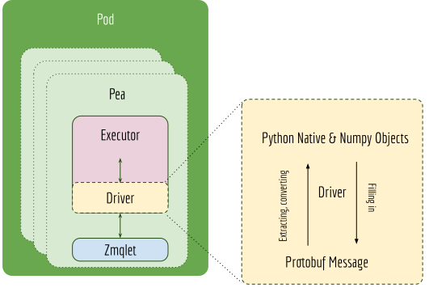

fionn_test
Driver
Executor
Table of Contents
JEP 1 — Redesigning Driver and its relation to Executor
Abstract
Rationale
Specification
New design of the Executor, Driver and Pea
Pea
Connecting Driver, Pea and Executor
Adding requests.on syntax
requests.on
The default values on requests.on
Serialization of Driver
Backwards Compatibility
Han Xiao (han.xiao@jina.ai)
Feb. 24, 2020
Accepted
@ece529e
@f6796ac
TBA
https://github.com/jina-ai/jina/issues/27
We describe why and how we refactor the jina.drivers.BaseDriver and make it as a part of jina.executors.BaseExecutor.
jina.drivers.BaseDriver
jina.executors.BaseExecutor
In the current implementation, the driver config is placed separately from the executor config. They are connected through CLI parameters --uses and --driver_group on the Pea’s level.
--uses
--driver_group
This poses multiple problems such as:
As people working on executor, they have a very vague clue how it will work in the microservice/network settings. They later have to design the corresponding driver_group to match the logic of the executor.
driver_group
Almost every executor needs a driver, separating the driver from the executor seems unnecessary.
Two YAML configs are cross-referencing the others. This is error-prone.
The name driver and handler are used interchangeably and they can be very confusing.
driver
handler
What we are expecting is the driver specification defined inside the executor YAML config, such as
!CompoundExecutor components: - !NumpyIndexer with: num_dim: -1 index_key: HNSW32 index_filename: vec.idx metas: name: my_vec_indexer # a customized name workspace: $TEST_WORKDIR - !MetaProtoIndexer with: index_filename: chunk.gzip metas: name: chunk_meta_indexer workspace: $TEST_WORKDIR metas: name: chunk_compound_indexer workspace: $TEST_WORKDIR on: SearchRequest: # under request type1 - !ChunkSearchDriver: with: name: my_vec_indexer method: query - !ChunkMetaSearchDriver with: method: meta_query IndexRequest: # under request type2 - !ChunkIndexDriver with: method: add - !PruneChunkDriver {} - !MetaChunkDriver with: method: add
The above YAML illustrates a simple example when writing JEP-1, please refer to the docs for the final YAML syntax and specification.
Driver is purposed to translate between protobuf message (in the network layer) and the python native object (in the executor). It connects the Python native jina.executors.BaseExecutor with the network layer jina.peapods.pea.Pea. With Driver ML developers can focus on the model/logic behind an Executor, using Python objects/numpy array as input and output, without worrying about how it deals with protobuf. The next figure illustrates this idea.
jina.peapods.pea.Pea

Each public Executor function requires a Driver if this function want to process the Protobuf message from the Pea. If an Executor exposes multiple function interfaces, e.g. add(), query(), then multiple Driver need to be implemented respectively. This is because each function requires different information from the Protobuf message, thus requires different extraction and filling strategies of each Driver.
add()
query()
A Driver has access to both Executor and Pea’s context. In particular, it can access any function from the Executor and the current message and previous messages received from Pea.
The same executor may work differently under different incoming requests, this is defined by chaining multiple drivers together as a driver group. The executor invokes different driver group according to the type of message that the Pea received.
Driver, Pea and Executor are connected via a chain of attach(). First, the Pea tells the Executor to attach to the Pea after loading:
attach()
The Executor tells all contained drivers to attach() to the Pea and Executor.
Depending on the Driver type, jina.drivers.BaseExecutableDriver is attached to both, whereas jina.drivers.BaseDriver is only attach to Pea.
jina.drivers.BaseExecutableDriver
# set kwargs for k, v in kwargs.items(): if k in tmp: tmp[k] = v if self.store_args_kwargs: if args:
The requests field is used to define the behavior of the executor under different requests. It is defined at the same level with metas and with. The on field describes what will the executor do on certain network requests. For example, for a jina.executors.encode.BaseEncoder, which is expected to do encode() in any circumstances. The on field should be defined as follows:
requests
metas
with
on
jina.executors.encode.BaseEncoder
encode()
!AwesomeExecutor with: metas: requests: on: [SearchRequest, IndexRequest, TrainRequest]: - !EncodeDriver with: method: encode
In the future, there may be other subfields implemented right under the requests field.
The on field supports multiple methods/drivers, and they are being called in the order of how they defined. For example,
on: SearchRequest: - !PruneChunkDriver {} - !Chunk2DocScoreDriver with: method: score - !PruneDocDriver {}
For the jina.executors.compound.CompoundExecutor, the on field supports specifying a method of a member executor with executor. For example,
jina.executors.compound.CompoundExecutor
executor
!CompoundExecutor components: - !NumpyIndexer metas: name: my_vec_indexer # a customized name - !MetaProtoIndexer metas: name: chunk_meta_indexer requests: on: SearchRequest: # under request type1 - !VecIndexDriver with: executor: my_vec_indexer method: query - !MetaChunkIndexDriver with: executor: chunk_meta_indexer method: meta_query
Note, a meaningful Executor is not always required. For example, a “router”, which only forwards the message can be defined as the follows using simply the jina.executors.BaseExecutor:
!BaseExecutor requests: on: [SearchRequest, IndexRequest, TrainRequest]: - !RouteDriver {}
Certain behaviors are followed by all executors, it makes sense to have a requests.default.yml to define all those default behaviors. A redefinition in the user-specified YAML will certainly override these default values.
requests.default.yml
When jina.drivers.BaseExecutableDriver.save() or jina.drivers.BaseExecutableDriver.save_config() is called, then the driver it contains will be also saved as a part of YAML or as a part of the binary pickle. Note, that the driver deserialized from the binary/YAML will be always “unattached”. This is because the attached Pea and Executor should not be serialized while saving. Thus it has to call attach() for making it connected to jina.peapods.pea.Pea and jina.executuors.BaseExecutor again.
jina.drivers.BaseExecutableDriver.save()
jina.drivers.BaseExecutableDriver.save_config()
jina.executuors.BaseExecutor
We make jina.drivers.BaseDriver and jina.drivers.BaseExecutableDriver loadable from YAML configs. The arguments of __init__() can be specified via with, and a non-parametric __init__() can be specified via {}. Very similar to how it is defined for jina.executors.BaseExecutor. For example,
__init__()
{}
- !MetaDocSearchDriver with: executor: blah method: goto - !ControlReqDriver {} - !BaseDriver {}
The old jina.drivers module is essentially removed.
jina.drivers
The Pod arguments --uses and driver_group are removed. Flow interface is also affected.
The Pod arguments --uses is renamed to yaml_path as now the Pod only needs one YAML config file.
yaml_path
resources/drivers.default.yml is kept only for references, it is not used in any Python code anymore. This file is expected to be removed in the future release.
resources/drivers.default.yml
A solely driver-powered Pea such as route(), merge(), clear() are now implemented with resources/executors.route.yml, resources/executors.merge.yml and resources/executors.clear.yml. The Pod arguments --yaml_path is also adapted to accept route, merge, clear as shortcuts.
route()
merge()
clear()
resources/executors.route.yml
resources/executors.merge.yml
resources/executors.clear.yml
--yaml_path
route
merge
clear